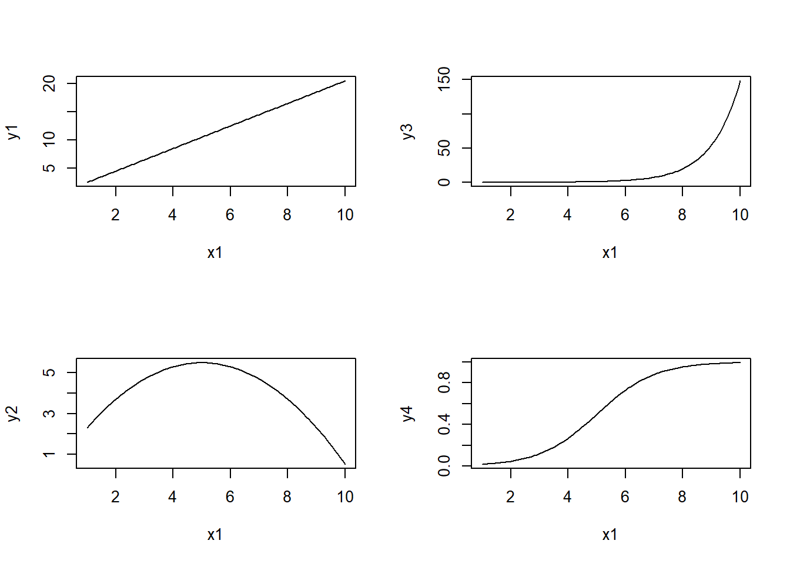
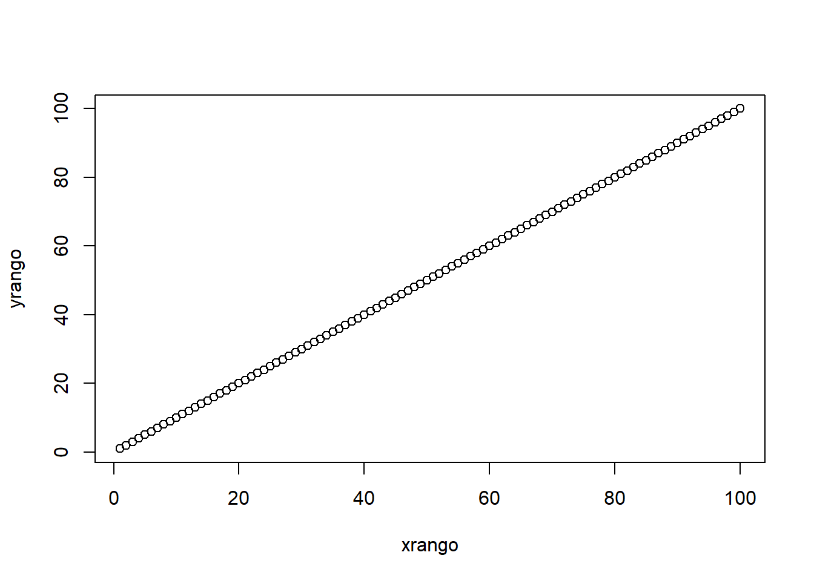
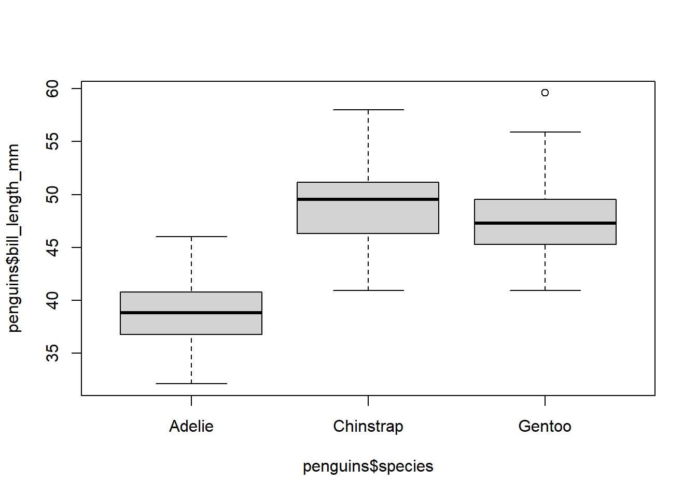
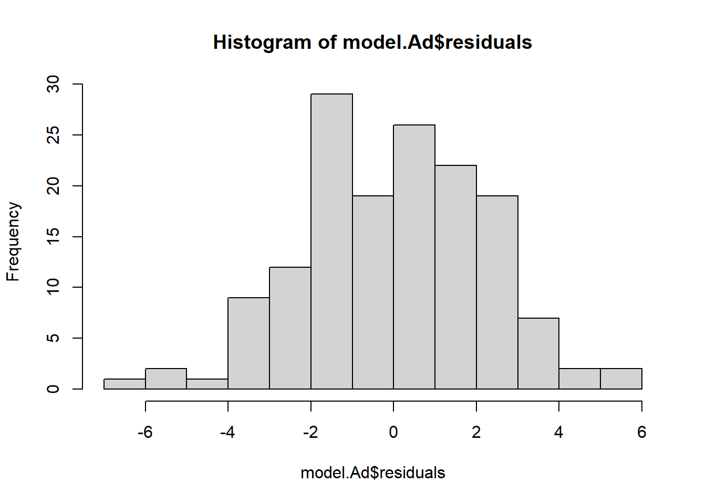
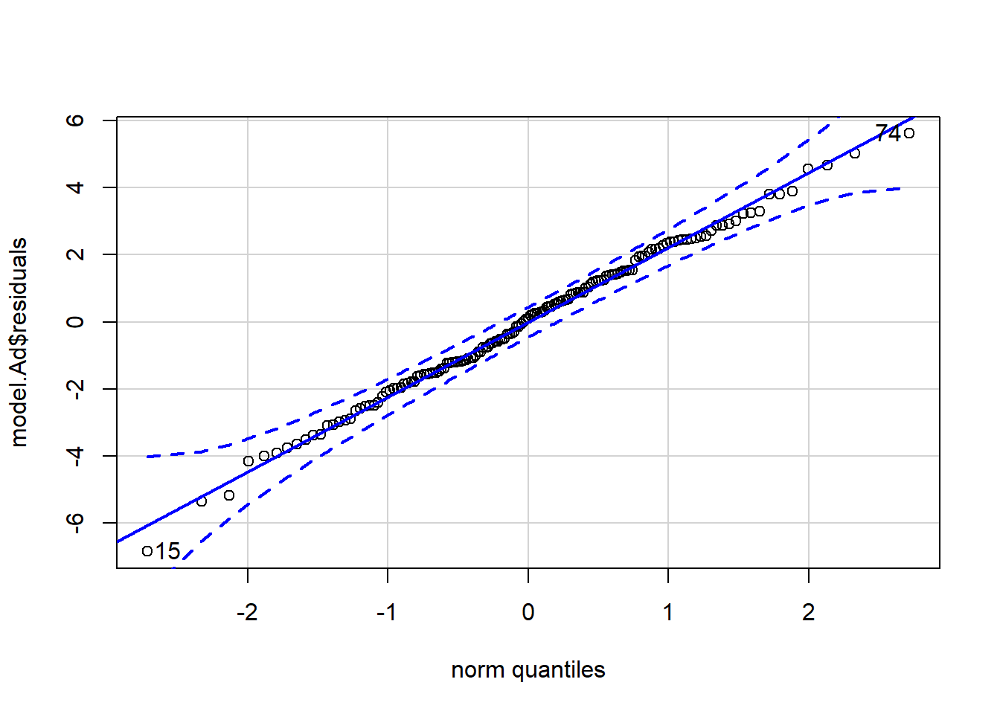
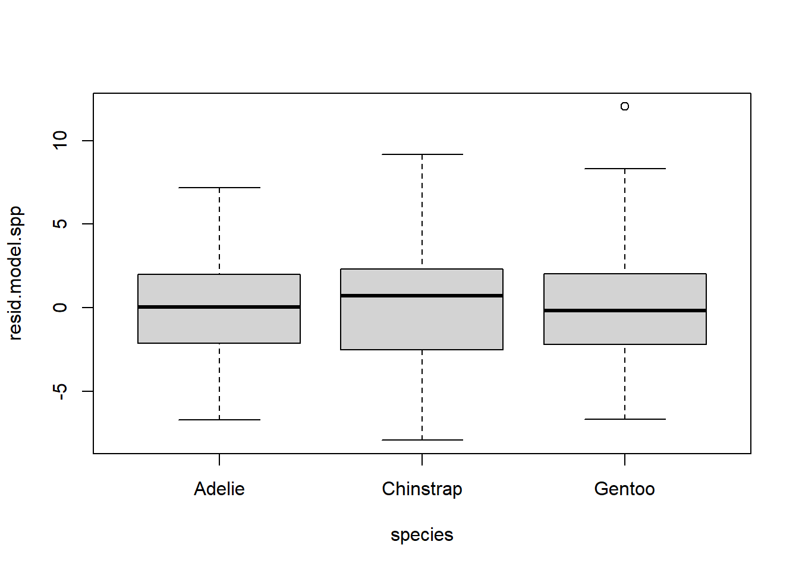
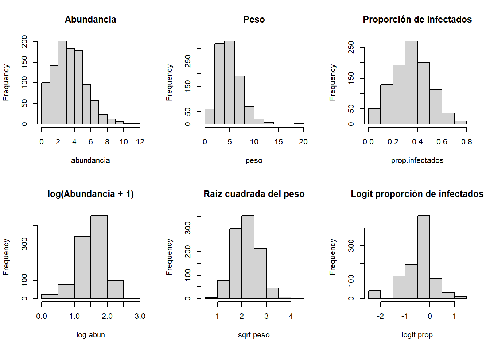

Modelos lineales y aditivos en ecología
2022-05-01
1 Introducción a los modelos lineales
1.1 Definición de modelo lineal
set.seed(999)
layout(matrix(1:4, 2, 2))
x <- rnorm(100)
y1 <- 2 + 1.5*x
plot(x, y1)
y2 <- 2 + 1.5*x - 0.2*x^2
plot(x, y2)
y3 <- exp(x)
plot(x, y3)
y4 <- log(y3)
plot(x, y4)
1.2 Correlación lineal simple

## [1] 1.21263## [1] 0.7897866## [1] 0.7897866##
## Pearson's product-moment correlation
##
## data: x and y
## t = 12.747, df = 98, p-value < 2.2e-16
## alternative hypothesis: true correlation is not equal to 0
## 95 percent confidence interval:
## 0.7023179 0.8537620
## sample estimates:
## cor
## 0.7897866# Monotonía
layout(matrix(1:4, 2, 2))
x1 <- seq(1, 10, length = 100)
y1 <- 0.5 + 2*x1
plot(x1, y1, type = "l")
y2 <- 0.5 + 2*x1 - 0.2*x1^2
plot(x1, y2, type = "l")
y3 <- exp(-5 + x1)
plot(x1, y3, type = "l")
y4 <- exp(-5 + x1)/(1 + exp(-5 + x1))
plot(x1, y4, type = "l")
## [1] 1
## [1] 11.3 Matrices de correlación
A continuación se presentan las medidas del tamaño corporal en adultos de tres especies de pingüinos en islas del Archipiélago Palmer, Antártida.
## Warning: package 'palmerpenguins' was built under R version 4.0.5## tibble [344 x 8] (S3: tbl_df/tbl/data.frame)
## $ species : Factor w/ 3 levels "Adelie","Chinstrap",..: 1 1 1 1 1 1 1 1 1 1 ...
## $ island : Factor w/ 3 levels "Biscoe","Dream",..: 3 3 3 3 3 3 3 3 3 3 ...
## $ bill_length_mm : num [1:344] 39.1 39.5 40.3 NA 36.7 39.3 38.9 39.2 34.1 42 ...
## $ bill_depth_mm : num [1:344] 18.7 17.4 18 NA 19.3 20.6 17.8 19.6 18.1 20.2 ...
## $ flipper_length_mm: int [1:344] 181 186 195 NA 193 190 181 195 193 190 ...
## $ body_mass_g : int [1:344] 3750 3800 3250 NA 3450 3650 3625 4675 3475 4250 ...
## $ sex : Factor w/ 2 levels "female","male": 2 1 1 NA 1 2 1 2 NA NA ...
## $ year : int [1:344] 2007 2007 2007 2007 2007 2007 2007 2007 2007 2007 ...## bill_length_mm bill_depth_mm flipper_length_mm body_mass_g
## bill_length_mm 1.0000000 -0.2350529 0.6561813 0.5951098
## bill_depth_mm -0.2350529 1.0000000 -0.5838512 -0.4719156
## flipper_length_mm 0.6561813 -0.5838512 1.0000000 0.8712018
## body_mass_g 0.5951098 -0.4719156 0.8712018 1.0000000pairs(penguins[, 3:6])
Ad <- subset(penguins, species == "Adelie")
round(cor(Ad[, 3:6], use = "complete.obs"), 2)## bill_length_mm bill_depth_mm flipper_length_mm body_mass_g
## bill_length_mm 1.00 0.39 0.33 0.55
## bill_depth_mm 0.39 1.00 0.31 0.58
## flipper_length_mm 0.33 0.31 1.00 0.47
## body_mass_g 0.55 0.58 0.47 1.00## Loading required package: lattice## Loading required package: survival## Loading required package: Formula## Loading required package: ggplot2## Warning: package 'ggplot2' was built under R version 4.0.5##
## Attaching package: 'Hmisc'## The following objects are masked from 'package:base':
##
## format.pval, units
## bill_length_mm bill_depth_mm flipper_length_mm body_mass_g
## bill_length_mm 1.00 0.39 0.33 0.55
## bill_depth_mm 0.39 1.00 0.31 0.58
## flipper_length_mm 0.33 0.31 1.00 0.47
## body_mass_g 0.55 0.58 0.47 1.00
##
## n= 151
##
##
## P
## bill_length_mm bill_depth_mm flipper_length_mm body_mass_g
## bill_length_mm 0e+00 0e+00 0e+00
## bill_depth_mm 0e+00 1e-04 0e+00
## flipper_length_mm 0e+00 1e-04 0e+00
## body_mass_g 0e+00 0e+00 0e+00## [1] NA 4.004485e-06 1.786194e-04 2.953193e-12 4.004485e-06
## [6] NA 2.437897e-04 1.199041e-13 1.786194e-04 2.437897e-04
## [11] NA 1.074612e-08 2.953193e-12 1.199041e-13 1.074612e-08
## [16] NA1.4 Regresión lineal simple
\[y = \beta_0 + \beta_1 x + \epsilon\] \[\epsilon \sim N(0, \sigma^2)\]
x <- rnorm(100)
e <- rnorm(100, mean = 0, sd = 1)
y <- 2 + 1.5*x + e
plot(x, y)
datos <- data.frame(x, y)
reg.simple <- lm(y ~ x, data = datos)
summary(reg.simple)##
## Call:
## lm(formula = y ~ x, data = datos)
##
## Residuals:
## Min 1Q Median 3Q Max
## -2.51881 -0.65262 -0.06149 0.59194 3.05669
##
## Coefficients:
## Estimate Std. Error t value Pr(>|t|)
## (Intercept) 1.9948 0.0996 20.03 <2e-16 ***
## x 1.4928 0.1020 14.64 <2e-16 ***
## ---
## Signif. codes: 0 '***' 0.001 '**' 0.01 '*' 0.05 '.' 0.1 ' ' 1
##
## Residual standard error: 0.996 on 98 degrees of freedom
## Multiple R-squared: 0.6863, Adjusted R-squared: 0.6831
## F-statistic: 214.4 on 1 and 98 DF, p-value: < 2.2e-16## [1] 1.492825## Estimate Std. Error t value Pr(>|t|)
## (Intercept) 1.994796 0.09960184 20.02770 2.042392e-36
## x 1.492825 0.10195980 14.64131 2.072208e-26# Coeficiente de determinación
SCE <- sum((mean(datos$y) - reg.simple$fitted)^2) # suma de cuadrados explicada
SCT <- sum((datos$y - mean(datos$y))^2) # suma de cuadrados total
R2 <- SCE/SCT
R2## [1] 0.6862674## [1] 0.6862674
1.6 Matrices de gráficos de dispersión

pairs(penguins[, 3:6], pch = 19, col = c("red", "orange", "blue")[penguins$species], lower.panel = NULL)
##
## Attaching package: 'psych'## The following object is masked from 'package:Hmisc':
##
## describe## The following objects are masked from 'package:ggplot2':
##
## %+%, alphapairs.panels(Ad[, 3:6],
method = "pearson", # correlación
density = FALSE, # gráficos de densidad
ellipses = FALSE, # elipses de confianza
lm = TRUE) # recta
1.7 Regresión lineal multiple
\[y = \beta_0 + \beta_1 x_1 + \beta_2 x_2 + ... + \beta_n x_n + \epsilon\] \[\epsilon \sim N(0, \sigma^2)\]
Analizaremos la relación entre la longitud del pico (bill_length_mm), masa corporal (body_mass_g) y alto del pico (bill_depth_mm) en pingüinos Adelia (\(Pygoscelis adeliae\)).
##
## Call:
## lm(formula = bill_length_mm ~ body_mass_g + bill_depth_mm, data = Ad)
##
## Residuals:
## Min 1Q Median 3Q Max
## -6.8363 -1.5105 0.0952 1.4967 5.6090
##
## Coefficients:
## Estimate Std. Error t value Pr(>|t|)
## (Intercept) 2.386e+01 2.752e+00 8.671 7.00e-15 ***
## body_mass_g 2.811e-03 4.853e-04 5.792 4.02e-08 ***
## bill_depth_mm 2.466e-01 1.829e-01 1.348 0.18
## ---
## Signif. codes: 0 '***' 0.001 '**' 0.01 '*' 0.05 '.' 0.1 ' ' 1
##
## Residual standard error: 2.228 on 148 degrees of freedom
## (1 observation deleted due to missingness)
## Multiple R-squared: 0.3097, Adjusted R-squared: 0.3004
## F-statistic: 33.21 on 2 and 148 DF, p-value: 1.222e-12sum.cuad.exp <- sum((mean(na.omit(Ad$bill_length_mm)) - model.Ad$fitted)^2)
sum.cuad.tot <- sum((na.omit(Ad$bill_length_mm) - mean(na.omit(Ad$bill_length_mm)))^2)
R2 <- sum.cuad.exp/sum.cuad.tot
R2## [1] 0.3097341# Gráfico de dispersión con plano de regresión
library(plot3D)
x <- Ad$body_mass_g
y <- Ad$bill_depth_mm
z <- Ad$bill_length_mm
x.pred <- seq(min(x, na.rm = T), max(x, na.rm = T), length = 30)
y.pred <- seq(min(y, na.rm = T), max(y, na.rm = T), length = 30)
xy <- expand.grid(body_mass_g = x.pred, bill_depth_mm = y.pred)
z.pred <- matrix(predict(model.Ad, newdata = xy), nrow = 30, ncol = 30)
scatter3D(x, y, z, pch = 18, cex = 2,
theta = 35, phi = 20, ticktype = "detailed",
xlab = "Masa corporal", ylab = "Alto del pico",
zlab = "Longitud del pico",
surf = list(x = x.pred, y = y.pred, z = z.pred, facets = NA))
library(visreg)
Ad$bill_depth_cat <- cut(Ad$bill_depth_mm, 3,
labels = c("Pequeño", "Mediano", "Grande"))
model.Ad_cat <- lm(bill_length_mm ~ body_mass_g + bill_depth_cat, data = Ad)
visreg(model.Ad_cat, "body_mass_g", "bill_depth_cat", gg = TRUE)
1.8 Variables categóricas (= dummies)
model.penguins1 <- lm(bill_length_mm ~ body_mass_g + species, data = penguins)
summary(model.penguins1)##
## Call:
## lm(formula = bill_length_mm ~ body_mass_g + species, data = penguins)
##
## Residuals:
## Min 1Q Median 3Q Max
## -6.8129 -1.6718 0.1336 1.4720 9.2902
##
## Coefficients:
## Estimate Std. Error t value Pr(>|t|)
## (Intercept) 2.492e+01 1.063e+00 23.443 < 2e-16 ***
## body_mass_g 3.749e-03 2.823e-04 13.276 < 2e-16 ***
## speciesChinstrap 9.921e+00 3.511e-01 28.258 < 2e-16 ***
## speciesGentoo 3.558e+00 4.858e-01 7.324 1.78e-12 ***
## ---
## Signif. codes: 0 '***' 0.001 '**' 0.01 '*' 0.05 '.' 0.1 ' ' 1
##
## Residual standard error: 2.403 on 338 degrees of freedom
## (2 observations deleted due to missingness)
## Multiple R-squared: 0.808, Adjusted R-squared: 0.8063
## F-statistic: 474 on 3 and 338 DF, p-value: < 2.2e-16model.penguins2 <- lm(bill_length_mm ~ body_mass_g + species + body_mass_g:species, data = penguins)
summary(model.penguins2)##
## Call:
## lm(formula = bill_length_mm ~ body_mass_g + species + body_mass_g:species,
## data = penguins)
##
## Residuals:
## Min 1Q Median 3Q Max
## -6.4208 -1.6461 0.0919 1.4718 9.3138
##
## Coefficients:
## Estimate Std. Error t value Pr(>|t|)
## (Intercept) 26.9941391 1.5926015 16.950 < 2e-16 ***
## body_mass_g 0.0031879 0.0004271 7.464 7.27e-13 ***
## speciesChinstrap 5.1800537 3.2746719 1.582 0.115
## speciesGentoo -0.2545907 2.7138655 -0.094 0.925
## body_mass_g:speciesChinstrap 0.0012748 0.0008740 1.459 0.146
## body_mass_g:speciesGentoo 0.0009030 0.0006066 1.489 0.138
## ---
## Signif. codes: 0 '***' 0.001 '**' 0.01 '*' 0.05 '.' 0.1 ' ' 1
##
## Residual standard error: 2.399 on 336 degrees of freedom
## (2 observations deleted due to missingness)
## Multiple R-squared: 0.8098, Adjusted R-squared: 0.807
## F-statistic: 286.1 on 5 and 336 DF, p-value: < 2.2e-16## Analysis of Variance Table
##
## Response: bill_length_mm
## Df Sum Sq Mean Sq F value Pr(>F)
## body_mass_g 1 3599.7 3599.7 625.5924 <2e-16 ***
## species 2 4612.5 2306.3 400.8045 <2e-16 ***
## body_mass_g:species 2 18.6 9.3 1.6159 0.2003
## Residuals 336 1933.4 5.8
## ---
## Signif. codes: 0 '***' 0.001 '**' 0.01 '*' 0.05 '.' 0.1 ' ' 11.9 Test de t
Se muestran los tiempos de coagulación sanguínea (min) en conejos bajo el efecto de dos drogas (A y B).
t_coag <- c(8.8, 8.4, 7.9, 8.7, 9.1, 9.6, 9.5,
9.9, 9.0, 11.1, 9.6, 8.7, 10.4, 9.5)
droga <- c(rep("A", 7), rep("B", 7))
coag <- data.frame(t_coag, droga)
t.test(t_coag ~ droga, var.equal = TRUE, data = coag)##
## Two Sample t-test
##
## data: t_coag by droga
## t = -2.3063, df = 12, p-value = 0.03974
## alternative hypothesis: true difference in means is not equal to 0
## 95 percent confidence interval:
## -1.72245499 -0.04897358
## sample estimates:
## mean in group A mean in group B
## 8.857143 9.742857##
## Call:
## lm(formula = t_coag ~ droga, data = coag)
##
## Residuals:
## Min 1Q Median 3Q Max
## -1.0429 -0.4036 -0.1000 0.5429 1.3571
##
## Coefficients:
## Estimate Std. Error t value Pr(>|t|)
## (Intercept) 8.8571 0.2716 32.617 4.37e-13 ***
## drogaB 0.8857 0.3840 2.306 0.0397 *
## ---
## Signif. codes: 0 '***' 0.001 '**' 0.01 '*' 0.05 '.' 0.1 ' ' 1
##
## Residual standard error: 0.7185 on 12 degrees of freedom
## Multiple R-squared: 0.3071, Adjusted R-squared: 0.2494
## F-statistic: 5.319 on 1 and 12 DF, p-value: 0.03974## [1] 0.8857143##
## F test to compare two variances
##
## data: t_coag[1:7] and t_coag[8:14]
## F = 0.54196, num df = 6, denom df = 6, p-value = 0.4749
## alternative hypothesis: true ratio of variances is not equal to 1
## 95 percent confidence interval:
## 0.09312469 3.15409283
## sample estimates:
## ratio of variances
## 0.5419631.10 Test de t pareado
fotosint <- c(1.42, 1.4, 1.44, 1.44, 1.42, 1.46, 1.49, 1.5, 1.42, 1.48, 1.38, 1.36, 1.47, 1.39, 1.43, 1.41, 1.43, 1.45, 1.36, 1.46)
nutriente <- c(rep("N1", 10), rep("N2", 10))
plantas <- data.frame(fotosint, nutriente)
t.test(fotosint ~ nutriente, paired = TRUE, data = plantas)##
## Paired t-test
##
## data: fotosint by nutriente
## t = 3.4138, df = 9, p-value = 0.007703
## alternative hypothesis: true difference in means is not equal to 0
## 95 percent confidence interval:
## 0.01113248 0.05486752
## sample estimates:
## mean of the differences
## 0.0331.11 Análisis de la varianza
Se quiere evaluar si hay diferencias entre la longitud del pico en las tres especies de pingüino del Archipiélago Palmer.

## Df Sum Sq Mean Sq F value Pr(>F)
## species 2 7015 3508 397.3 <2e-16 ***
## Residuals 330 2914 9
## ---
## Signif. codes: 0 '***' 0.001 '**' 0.01 '*' 0.05 '.' 0.1 ' ' 1##
## Call:
## lm(formula = bill_length_mm ~ species, data = na.omit(penguins))
##
## Residuals:
## Min 1Q Median 3Q Max
## -7.934 -2.234 0.076 2.066 12.032
##
## Coefficients:
## Estimate Std. Error t value Pr(>|t|)
## (Intercept) 38.8240 0.2459 157.88 <2e-16 ***
## speciesChinstrap 10.0099 0.4362 22.95 <2e-16 ***
## speciesGentoo 8.7441 0.3670 23.83 <2e-16 ***
## ---
## Signif. codes: 0 '***' 0.001 '**' 0.01 '*' 0.05 '.' 0.1 ' ' 1
##
## Residual standard error: 2.971 on 330 degrees of freedom
## Multiple R-squared: 0.7066, Adjusted R-squared: 0.7048
## F-statistic: 397.3 on 2 and 330 DF, p-value: < 2.2e-16## Tukey multiple comparisons of means
## 95% family-wise confidence level
##
## Fit: aov(formula = bill_length_mm ~ species, data = na.omit(penguins))
##
## $species
## diff lwr upr p adj
## Chinstrap-Adelie 10.009851 8.982789 11.0369128 0.0000000
## Gentoo-Adelie 8.744095 7.880135 9.6080546 0.0000000
## Gentoo-Chinstrap -1.265756 -2.329197 -0.2023151 0.01482121.12 Supuestos
1.12.1 Colinealidad
## Loading required package: carData##
## Attaching package: 'car'## The following object is masked from 'package:psych':
##
## logit## body_mass_g bill_depth_mm
## 1.496861 1.4968611.12.2 Análisis de residuos


## 15 74
## 14 73
layout(1)
# Test de t y ANOVA
model.spp <- aov(bill_length_mm ~ species, data = na.omit(penguins))
resid.model.spp <- resid(model.spp)
boxplot(resid.model.spp ~ species, data = na.omit(penguins)) 

##
## Bartlett test of homogeneity of variances
##
## data: resid.model.spp by species
## Bartlett's K-squared = 5.6782, df = 2, p-value = 0.058481.13 Transformaciones
\[log(y) = y' = \beta_0 + \beta_1 x_1 + \beta_2 x_2 + ... + \beta_n x_n + \epsilon\]
layout(matrix(1:6, 2, 3))
abundancia <- rpois(n = 1000, lambda = 4)
hist(abundancia, main = "Abundancia")
log.abun <- log(abundancia + 1)
hist(log.abun, breaks = 6, main = "log(Abundancia + 1)")
peso <- rgamma(n = 1000, shape = 5)
hist(peso, main = "Peso")
sqrt.peso <- sqrt(peso)
hist(sqrt.peso, breaks = 6, main = "Raíz cuadrada del peso")
prop.infectados <- rbinom(n = 1000, size = 10, p = 0.4)/10
hist(prop.infectados, main = "Proporción de infectados")
logit.prop <- log(prop.infectados/(1 - prop.infectados))
hist(logit.prop, main = "Logit proporción de infectados", breaks = 6)
1.14 Actividades
1.14.1 Ejercicios de repaso
1.1. Calcule:
El logaritmo en base e y en base 10 de 9.
La raíz cuadrada y quinta de 10.
1.2. Genere los siguientes vectores x e y, respectivamente:
1 4 7 11 5 2
1 2 3 4 5 6
Luego, identifique las operaciones para obtener:
2 6 10 15 10 8
2 8 14 22 10 4
3 6 9 12 15 18
1.3. Genere las siguientes secuencias:
1 2 3 4 5 6 7 8 9 10 11
5 6 7 8 9 10
5.0 5.5 6.0 6.5 7.0 7.5 8.0 8.5 9.0 9.5 10.0
10.0 10.1 10.2 10.3 10.4 10.5 10.6 10.7 10.8 10.9 11.0 11.1 11.2 11.3
1 3 5 7 9
9 7 5 3 1
3 3 3 3 3
1 2 1 2 1 2 1 2 1 2
“IML” “R” “IML” “R” “IML” “R” “IML” “R”
1 1 1 2 2 2 3 3 3 4 4 4 5 5 5
1.4. Cree un vector que represente una variable aleatoria de 1000 valores con distribución normal estándar.
Grafique un histograma (color naranja), teniendo en cuenta 10 y 15 celdas.
Calcule su media y desvío estándar.
Calcule qué porcentaje de los datos se encuentra entre 2 desvíos estándares.
1.5. Cree un vector que represente una variable aleatoria de 500 valores con distribución de Poisson y diferentes medias (1, 5 y 100).
Para cada distribución, calcule su media y varianza.
Grafique los tres histogramas en el mismo panel ¿Qué observa?
Haga una tabla que muestre la frecuencia para cada conteo y luego realice un gráfico de barras.
1.6. Utilizando la variable aleatoria del Ejercicio 1.2, construya un marco de datos que incluya además, un factor de 4 niveles con el mismo número de observaciones en cada nivel, de tal forma que los primeros valores pertenezcan al primer nivel, los siguientes al segundo nivel y así sucesivamente.
- Calcule la media y desvío estándar para los valores de cada nivel, y luego grafique un histograma para cada uno de ellos.
1.7. A partir de información de la web, construya un marco de datos que incluya como variables 5 ciudades del mundo, con su área y número de habitantes.
Obtenga cuál es la ciudad con el mayor número de habitantes de su marco de datos y en qué fila se encuentra.
Filtre aquellas ciudades con más de 500 mil habitantes.
Filtre aquellas ciudades con menos de 300 mil habitantes y un área menor a 250 mil ha.
Cree una columna adicional binaria, en la cual a aquellas ciudades con más de 500 mil habitantes se le asigne un 1, o de lo contrario, un 0.
1.8. Simule 1000 valores de una distribución normal (media = 10, desvío = 3) y utilicela como predictor en un modelo de regresión lineal, de forma tal que la variable respuesta cambie 0.2 unidades por unidad del predictor.
Calcule la covarianza y la correlación de Pearson entre ambas variables.
Grafique un diagrama de dispersión junto con el modelo ajustado.
Realice un resumen del modelo y compare las estimaciones de los parámetros obtenidos (intercepto, pendiente y varianza de los residuos) con los poblacionales.
Estandarice ambas variables y calcule la correlación de Pearson ¿Qué observa y por qué?
Con los mismos parámetros, simule ahora 50 valores y obtenga el resumen del modelo ¿Qué sucede con la pendiente y la significancia, y por qué?
1.14.2 Ejercicio 1.2
Se analizó la diversidad de diatomeas (div) en cursos de agua (curso) con distintos niveles de concentración de zinc (zinc). Los datos se encuentran en el archivo diatom.xls. Grafique la distribución de frecuencias de la diversidad de diatomeas y la diversidad como función de la concentración de zinc. Calcule la media, mediana, varianza, desvío estándar y coeficiente de variación de la diversidad para cada concentración de zinc ¿Qué patrón le sugieren los datos?
1.14.3 Ejercicio 1.3
Sokal & Rohlf (1997) analizaron el consumo de oxígeno en dos especies de lapas bajo tres concentraciones de agua de mar (limpets.csv).
Calcule la media y varianza para cada especie, concentración y combinación de especie y concentración.
Realice un gráfico que muestre las diferentes combinaciones entre especie y concentración. Grafique e interprete la interacción entre ambos factores utilizando la función
interaction.plotdel paquetecar.¿Existen diferencias entre las especies y las concentraciones? Utilice un modelo adecuado que responda a esta pregunta.
Evalúe los supuestos del modelo.
1.14.4 Ejercicio 1.4
Allison & Cicchetti (1976) compilaron la cantidad de horas de sueño, la morfología y el riesgo de predación (escala de 1 a 5 -menor valor, menor riesgo de predación-) en 62 especies de mamíferos (allison.csv).
Realice un resumen (media, desvío y coeficiente de variación) de las variables del conjunto de datos.
Grafique histogramas para cada una de las variables y diagramas de dispersión para cada par de variables.
Ajuste un modelo adecuado entre longevidad en años (
LifeSpan), masa corporal en kg (BodyWt) y predación (Predation).Grafique la relación entre masa corporal y longevidad, para cada nivel de predación ¿Puede observar algún patrón que haga reconsiderar el modelo ajustado en el inciso anterior?
Evalúe los supuestos del modelo final.
Realice un gráfico que represente el modelo ajustado.
Según el modelo ¿Cuánto sería la longevidad para el ser humano, bajo los supuestos que considere? ¿Es realista la predicción que obtuvo?